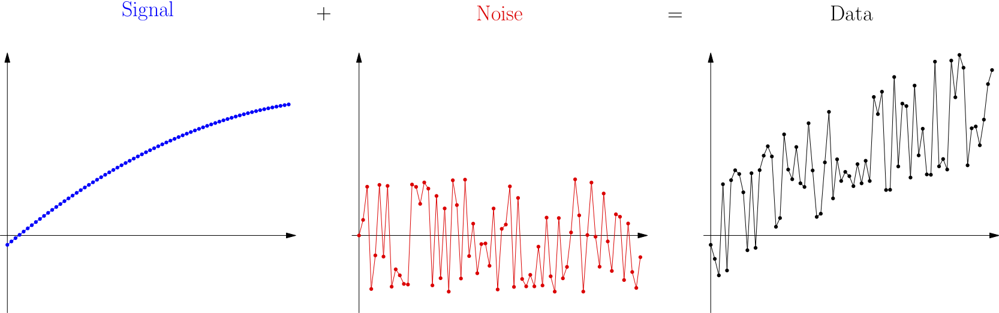
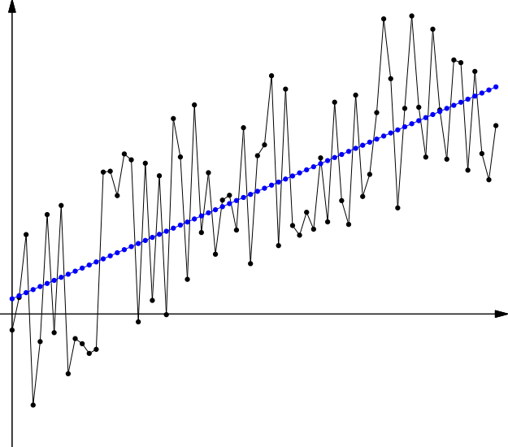
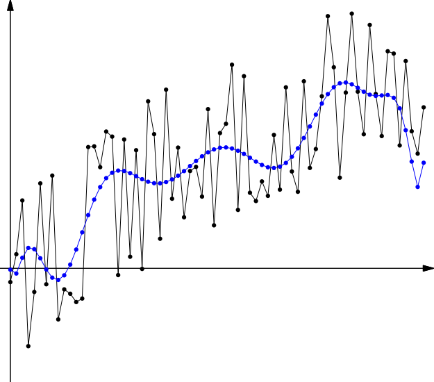
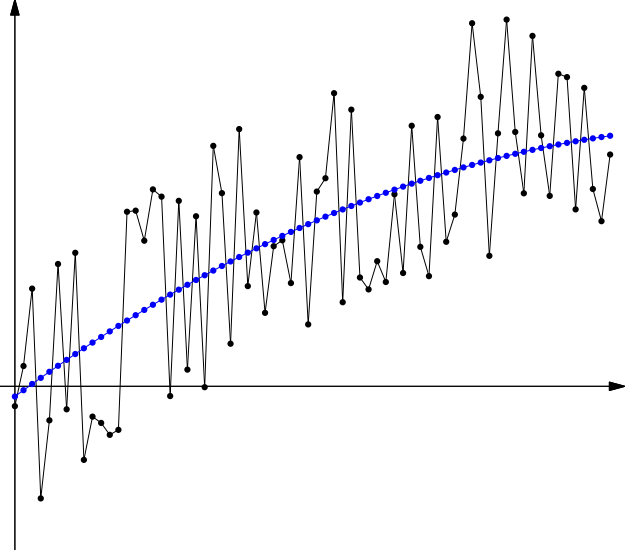

17. Introduction to Machine Learning¶
See also the slides that summarize a portion of this content.
While Bentley University does not currently have an undergraduate course in Machine Learning, there are several related courses currently available. MA347 (Data Mining) covers topics related to machine learning, but not exactly the same; both are advanced math and stats implemented in a programming environment, but with different focuses.
Machine learning is also closely connected to mathematical modeling, and we have statistics courses that cover modeling, especially MA252 (Regression Analysis), MA315 (Mathematical Modeling with VBA in Excel), and MA380 (Introduction to Generalized Linear Models and Survival Analysis in Business). And if you are planning to stay at Bentley for graduate school, there is a machine learning course at the graduate level, MA707 (Introduction to Machine Learning), and a somewhat related course CS733 (AI Techniques and Applications).
Today’s notes are a small preview of the kind of material that appears in a machine learning course.
17.1. Supervised and unsupervised learning¶
Big Picture - Supervised vs. unsupervised machine learning
Machine learning is broken into two categories, supervised and unsupervised. The definitions for these are below.
Supervised learning provides to the computer a dataset of inputs and their corresponding outputs, and asks the computer to learn something about the relationships between the inputs and the outputs. One of the most commonly used examples is to provide small photographs of handwritten digits as the inputs (like those shown below, from this source) and make the corresponding outputs the integer represented. For instance, for the top left input shown below, the output would be the integer 0.
{kind=link}

This is called supervised learning because the data scientist is providing the outputs that the computer should be giving for each input. It is as if the data scientist is looking over the computer’s shoulder, teaching it what kinds of outputs it should learn to create. A mathematical model trained on a large enough set of inputs and outputs like those can learn to recognize handwritten digits with a high degree of accuracy. The most common technique of doing so is with neural networks and deep learning, topics covered in MA707.
Unsupervised learning provides to the computer a dataset, but does not break it into input-output pairs. Rather, the data scientist asks the computer to detect some kind of structure within the data. One example of this is cluster analysis, covered in MA347, but you saw another example in the Chapter 16 notes. When we used SVD to approximate a network, thus revealing more of its latent structure than the precise data itself revealed, we were having the computer do unsupervised learning. Another example of unsupervised learning is principal components analysis (PCA), covered in many statistics courses.
Today, we will focus on supervised learning. For this reason, when we look at data, we will designate one column as the output that we want the computer to learn to predict from all the other columns as inputs. The terminology for inputs and output varies:
Computer science typically speaks of the inputs and the output.
Machine learning typically speaks of the features and the target.
Statistics typically speaks of the predictors and the respoonse.
I may use any of these terms in this chapter and in class; you should become familiar with the fact that they are synonyms for one another. Although mathematics has its own terms for inputs and outputs (like domain and range) these are not used to refer to specific columns of a dataset, so I don’t include them on the list above. Most of machine learning is supervised, and we will focus on supervised learning exclusively in this chapter.
17.2. Seen and unseen data¶
Big Picture - A central issue: overfitting vs. underfitting
Probably the most significant concern in mathematical modeling in general (and machine learning in particular) is overfitting vs. underfitting for a mathematical model, sometimes also called bias vs. variance. We explore its meaning in this section, and we will find that it is intimately tied up with how mathematical models perform on unseen data.
17.2.1. What is a mathematical model?¶
Since overfitting and underfitting are concepts that apply to mathematical models, let’s ensure that we have a common definition for a mathematical model. Just as a model airplane is an imitation of a real airplane, and just as the Model UN is an imitation of the actual United Nations, a mathematical model is an imitation of reality. But while a model airplane is built of plastic and the Model UN is built of students, a mathematical model is built of mathematics, such as equations, algorithms, or formulas. Like any model, a mathematical model does not perfectly represent the real thing, but we aim to make models that are good enough to be useful.
A mathematical model that you’re probably familiar with is the position of a falling object over time, introduced in every introductory physics class. It’s written as \(s(t)=\frac12gt^2+v_0t+s_0\), where \(t\) is time, \(g\) is the acceleration due to gravity, \(v_0\) is the initial velocity, and \(s_0\) the initial position. This is very accurate for experiments that happen in the small laboratories we encounter in physics classes, but it becomes inaccurate if we consider, for example, a skydiver. Even before deploying a parachute, the person’s descent is significantly impacted by air resistance, and dramatically more so after deploying the parachute, but the simple model just given doesn’t include air resistance. So it’s a good model, but not a perfect model. All mathematical models of real world phenomena are imperfect; we just try to make good ones.
17.2.2. Models built on data¶
Physicists, however, have it easy, in the sense that physical phenomena tend to follow simple mathematical laws. In fact, the rule for falling objects just given in the previous paragraph is so simple that students who have completed only Algebra I can understand it; no advanced degree in mathematics required! Such simple patterns are easy to spot in experimental data.
Data science, however, is typically applied to more complex systems, such as economies, markets, sports, medicine, and so on, where simple patterns aren’t always the rule. In fact, when we see a dataset and try to create a mathematical model (say, a formula) that describes it well, it won’t always be obvious when we’ve done a good job. A physicist can often go and get more data through an experiment, but a data scientist may not be able to do so; sometimes one dataset is all you have. Is it enough data to validate when we’ve made a good model?
That raises the question: What is a good model? The answer is that a good model is one that is reliable enough to be useful, often for prediction. For example, if we write a formula that predicts the expected increase in sales that will come from a given amount of marketing spending in a certain channel, we’ll want to use that to consider possible future scenarios when making strategic decisions. It’s a good model if it’s reliable enough to make decent predictions about the future (with some uncertainty of course).
In that example, the formula for sales based on marketing spending would have been built from some past experience (seen data, that is, data we’ve actually seen, in the past). But we’re using it to predict something that could happen in the future, asking “what if we spent this much?” We’re hoping the model will still be good on unseen data, that is, inputs to the model that we haven’t yet seen happen.
Consider another example. When researchers work on developing self-driving cars, they gather lots of data from cameras and sensors in actual vehicles, and train their algorithms to make the correct decisions in all of those situations. But of course, if self-driving cars are ever to succeed, the models the researchers create will need to work correctly on new, unseen data as well–that is, the new camera and sensor inputs the system experiences when it’s actually driving a car around the real world. The model will be built using known/seen data, but it has to work well also on unkown, or not-yet-seen, data.
17.2.3. Overfitting and underfitting¶
This brings us to the big dilemma introduced above. There are two big mistakes that a data scientist can make when fitting a model to existing data.
The data scientist could make a model that tailors itself to every detail of the known data precisely.
This is called overfitting, because the model is too much dependent on the peculiarities of that one dataset, and so it won’t behave well on new data.
It typically happens if the model is too complex and/or customized to the data.
It is also called variance, because the model follows too much the tiny variations of the dataset, rather than just its underlying structure.
The data scientist could make a model that captures only very simple characteristics of the known data and ignores some important details.
This is called underfitting, because the model is too simple, and missed some signals that the data scientist could have learned from the known data.
It typically happens if the model is not complex enough.
It is also called bias, because just as a social bias may pigeonhole a complex person into a simple stereotype, making the decision to use too simple a mathematical model also pigeonholes a complex problem into a simple stereotype, and limits the values of the results.
So we have a spectrum, from simple models to complex models, and there’s some happy medium in between. Finding that happy medium is the job of a mathematical modeler.
This issue is intimiately related to the common terms of signal and noise, so it’s worth exploring this important issue from that viewpoint as well.
17.2.4. Signal and noise¶
Surely, we’ve all seen a movie in which something like this happens: An astronaut is trying to radio back to earth, but the voice they’re hearing is mostly static and crackling, with only some glimpses of actual words coming through. The words are the signal the astronaut is hoping to hear and the crackling static is the noise on the line preventing the signal from coming through clearly. Although these are terms with roots in engineering and the hard sciences, they are common metaphors in statistics and data work as well. One famous modern example of their use in that sphere is the title of Nate Silver’s popular and award-winning 2012 book, The Signal and the Noise. Let’s use the pictures below to see why Silver used these terms to talk about statistics.

Let’s imagine for a moment a simple scenario with one input variable and one output variable, such as the example earlier of marketing spend in a particular channel vs. expected sales increase.
If we could see with perfect clarity how the world worked, we would know exactly how customers respond to our marketing spending. This omniscient knowledge about marketing nobody has, but we can imagine that it exists somewhere, even if no one knows it (except God). That knowledge is the signal that we are trying to detect. It’s shown on the left above. (That curve doesn’t necessarily have anything to do with marketing; it’s just an example curve.)
Whenever we try to gather data about the phenomenon we care about, inevitably some problems mess things up. We might make mistakes when measuring or recording data. Some of our data might be recorded at times that are special (like a holiday weekend) that make them not representative of the whole picture. And other variables might be influencing our data that we didn’t measure, such as the weather or other companies’ marketing campaigns. All of this creates fluctuations we call noise, as shown in the middle.
What we actually measure when we gather data is the combination of these two things, as shown on the right, above. Of course, when we get data, we see only that final graph, the signal plus the noise together, and we don’t know how to separate them.
Not knowing that the original signal was parabolic, we might make either of two mistakes. First, we might make a model that is too simple, an underfit model, such as a linear one.

You can see that the model is a bit higher than the center of the data on each end, and a bit lower than the center of the data in the middle. This is because the model is missing some key feature of the data, its slight downward curvature. The model is underfit; it should be more fit to the unique characteristics this data is showing.
Second, we might make a model that is too complex, an overfit model, such as a high-degree polynomial model.

This is a particularly easy mistake to make in Excel, where you can use the options in the trendline dialog box to choose any polynomial model you like, and it’s tempting to crank up the polynomial degree and watch the measurement of goodness of fit increase! But that measure is telling you only how well the model fits the data you have, not any unseen data. That difference is the core of what overfitting means. The model is overfit to known data, and thus probably generalizes poorly to unseen data.
Polynomial models are especially problematic in this area, because all polynomials (other than linear ones) diverge rapidly towards \(\pm\infty\) in both directions, thus making them highly useless for prediction if given an input outside the range of the data on which the model was fit.
The happy medium between these two mistakes, in this case, is a quadratic model, because in this example, I made the signal a simple quadratic function. Of course, in the real world, signals of many types can occur, and their exact nature is not known from the data alone.

Although this quadratic model may not exactly match the quadratic function that is the signal, it is the closest we can come based on the data we observed.
Now we know what the problems are. How do we go about avoiding underfitting or overfitting? Machine learning (and mathematical modeling in general) have developed some best practices for doing just that.
17.3. Training, validation, and testing¶
Big Picture - Why we split data into train and test sets
Recall that the key question we’re trying to answer is, “How do I make a model that works well on unseen data?” Or more precisely, “How do I make a model that works well on data that wasn’t used to create the model?”
The solution is actually rather simple: When given a dataset, split it into two parts, one you will use to create your model, and the other that you will use as “unseen data,” on which to test your model. The details are actually slightly more intricate than that simple answer, but that’s the heart of it.
17.3.1. Training vs. testing¶
If we take the advice above into account, the process of mathematical modeling would then proceed like this:
We get a dataset
dfthat we’re going to use to build a model.We split the data into two parts, a larger part
df_trainthat we’ll use for “training” (creating the model) and a smaller partdf_testthat we’ll use for testing the model after it’s been created.Since
df_testisn’t used to create the model, it’s “unseen data” from the model’s point of view, and can give us a hint on how the model will perform on data that’s entirely outside ofdf.Typically,
df_trainis a random sample of about 70%-80% ofdf, anddf_testis the other 20%-30%.
We choose which model we want to use (such as linear regression, for example) and fit the model to
df_trainonly.This is called the training phase; what statisticians call “fitting a model,” machine learning people call “training the model.”
We use the model to predict outputs for each input in
df_testand compare them to the known outputs indf_test, and see how well the model does.For example, you might compute the distribution of percent errors, and see if they’re within the tolerance you can accept in your business application.
This is called the testing phase.
If the model seems acceptable, you would then proceed to re-fit the same model on the entire dataset
dfbefore you use it for predictions, because more data tends to improve model quality.
It is easy to split a DataFrame’s rows into two different sets like this with random sampling. Use code like the following.
# Create some fake data to use for demonstrating the technique:
import pandas as pd
import numpy as np
df = pd.DataFrame( { 'Totally': np.linspace(1,2,10), 'Fake': np.linspace(3,4,10), 'Data': np.linspace(5,6,10) } )
df
| Totally | Fake | Data | |
|---|---|---|---|
| 0 | 1.000000 | 3.000000 | 5.000000 |
| 1 | 1.111111 | 3.111111 | 5.111111 |
| 2 | 1.222222 | 3.222222 | 5.222222 |
| 3 | 1.333333 | 3.333333 | 5.333333 |
| 4 | 1.444444 | 3.444444 | 5.444444 |
| 5 | 1.555556 | 3.555556 | 5.555556 |
| 6 | 1.666667 | 3.666667 | 5.666667 |
| 7 | 1.777778 | 3.777778 | 5.777778 |
| 8 | 1.888889 | 3.888889 | 5.888889 |
| 9 | 2.000000 | 4.000000 | 6.000000 |
# Choose an approximately 80% subset:
# (In this case, 8 is 80% of the rows.)
rows_for_training = np.random.choice( df.index, 8, False )
training = df.index.isin( rows_for_training )
df_train = df[training]
df_test = df[~training]
Let’s see the resulting split.
df_train
| Totally | Fake | Data | |
|---|---|---|---|
| 1 | 1.111111 | 3.111111 | 5.111111 |
| 2 | 1.222222 | 3.222222 | 5.222222 |
| 4 | 1.444444 | 3.444444 | 5.444444 |
| 5 | 1.555556 | 3.555556 | 5.555556 |
| 6 | 1.666667 | 3.666667 | 5.666667 |
| 7 | 1.777778 | 3.777778 | 5.777778 |
| 8 | 1.888889 | 3.888889 | 5.888889 |
| 9 | 2.000000 | 4.000000 | 6.000000 |
df_test
| Totally | Fake | Data | |
|---|---|---|---|
| 0 | 1.000000 | 3.000000 | 5.000000 |
| 3 | 1.333333 | 3.333333 | 5.333333 |
17.3.2. Data leakage¶
It is is essential, in the above five-step process, not to touch (or typically even look at) the testing data (in df_test) until the testing phase. It is also essential not to repeat back to step 1, 2, or 3 once you’ve reached step 4. Otherwise df_test no longer represents unseen data. (Like that embarrassing social media post, you can’t unsee it.) In fact, in machine learning competitions, the group running the competition will typically split the data into training and testing sets before the competition, and distribute only the training set to competitors, leaving the testing set secret, to be used for judging the winner. It’s truly unseen data!
If a data scientist even looks at the test data or does summary statistics about it, this information can influence how they do the modeling process on training data. This error is called data leakage, because some aspects of the test data have leaked out of where they’re supposed to be safely contained at the end of the whole process, and have contaminated the beginning of the process instead. The five-step process given above is designed, in part, to eliminate data leakage.
17.3.3. Validation¶
But this restriction on seeing df_test only once introduces a significant drawback. What if you have several different models you’d like to try, and you’re not sure which one will work best on unseen data? How can we compare multiple models if we can test only one? The question is even more complex if the model comes with parameters that a data scientist is supposed to choose (so-called hyperparameters), which may require some iterative experimentation.
The answer to this problem involves introducing a new phase, called validation, in between training and testing, and creating a three-way data split. Perhaps you’ve heard of the technique of cross-validation, one particular way to do the validation step. In this chapter, since we are just doing a quick introduction to the machine learning process, we will not dive deeply into the validation phase, but will just keep the five-step process shown above, which uses only a train/test split of the data.
17.4. Logistic Regression¶
Machine learning is an area of statistics and computer science that includes many types of advanced models, such as support vector machines, neural networks, decision trees, random forests, and other ensemble methods. We will see in this small, introductory chapter just one new modeling method, logistic regression. But we will use it as a way to see several aspects of the way machine learning is done in practice, including the train/test data split discussed above.
17.4.1. Classification vs. regression¶
The particular machine learning task we’ll cover as an example in this chapter uses a technique called logistic regression. This technique is covered in detail in MA347 and MA380, but we will do just a small preview here. The key difference between logistic regression and linear regression is one of output type:
Linear regression creates a model whose output type is real numbers.
Logistic regression creates a model whose output type is boolean, with values 0 and 1.
(Technically, logistic regression models create outputs anywhere in the interval \((0,1)\), not including either end, and we round up/down from the center to convert them to boolean outputs.)
Machine learning tasks are often sorted broadly into two categories, classification and regression. Models that output boolean values (or any small number of choices, not necessarily two) are called classification models, and models that output numerical values are called regression models. (This is unfortunate, because logistic regression is used for classification. I don’t pick the names.) We are going to study a binary classification problem below, and so we want a model that outputs one of two values, 0 or 1. Logistic regression is a natural choice.
If you take MA347 or MA380, you will learn the exact transformation of the inputs and outputs that make logistic regression possible. But for our purposes here, we will just use Python code that handles them for us. The essentials are that we provide any set of numeric variables as input and we get boolean values (zeros and ones) as model output.
17.4.2. Medical example¶
Let’s make this concrete with an example. Assume we’ve measured three important health variables about ten patients in a study and then given them all an experimental drug. We then measured whether they responded well or not to the drug (0 meaning no and 1 meaning yes). We’d like to try to predict, from their initial three health variables, whether they will respond well to the drug, so we know which new patients might benefit. We will use fabricated data, partly because medical data is private and partly beacuse it will be nice to have a small example from which to learn.
df_drug_response = pd.DataFrame( {
'Height (in)' : [ 72, 63, 60, 69, 59, 74, 63, 67, 60, 64 ],
'Weight (lb)' : [ 150, 191, 112, 205, 136, 139, 184, 230, 198, 169 ],
'Systolic (mmHg)' : [ 90, 105, 85, 130, 107, 117, 145, 99, 109, 89 ],
'Response' : [ 0, 1, 0, 0, 1, 1, 1, 0, 1, 1 ]
} )
df_drug_response
| Height (in) | Weight (lb) | Systolic (mmHg) | Response | |
|---|---|---|---|---|
| 0 | 72 | 150 | 90 | 0 |
| 1 | 63 | 191 | 105 | 1 |
| 2 | 60 | 112 | 85 | 0 |
| 3 | 69 | 205 | 130 | 0 |
| 4 | 59 | 136 | 107 | 1 |
| 5 | 74 | 139 | 117 | 1 |
| 6 | 63 | 184 | 145 | 1 |
| 7 | 67 | 230 | 99 | 0 |
| 8 | 60 | 198 | 109 | 1 |
| 9 | 64 | 169 | 89 | 1 |
Let us assume that this data is the training dataset, and the test dataset has already been split out and saved in a separate file, where we cannot yet see it. We will create a model on this dataset, and then later evaluate how well it behaves on new data.
When we apply logistic regression to this dataset, we will want to make it clear which columns are to be seen as inputs (or features or predictors) and which is to be seen as the output (or target or response). To facilitate this, let’s store them in different variables.
predictors = df_drug_response[['Height (in)','Weight (lb)','Systolic (mmHg)']]
response = df_drug_response['Response']
17.4.3. Logistic regression in scikit-learn¶
A very popular machine learning toolit is called scikit-learn, and is distributed as the Python module sklearn. If your Python installation came from Anaconda, you already have sklearn installed. We can use the logistic regression tools built into scikit-learn to create a logistic regression model that will use the first three columns above as inputs from which it should predict the final column as the output.
# Import the module
from sklearn.linear_model import LogisticRegression
# Create a model and fit it to the data
model = LogisticRegression()
model.fit( predictors, response )
# Let's see how close it came.
df_drug_response['Prediction'] = model.predict( predictors )
df_drug_response['Correct'] = df_drug_response['Prediction'] == df_drug_response['Response']
df_drug_response
| Height (in) | Weight (lb) | Systolic (mmHg) | Response | Prediction | Correct | |
|---|---|---|---|---|---|---|
| 0 | 72 | 150 | 90 | 0 | 0 | True |
| 1 | 63 | 191 | 105 | 1 | 1 | True |
| 2 | 60 | 112 | 85 | 0 | 1 | False |
| 3 | 69 | 205 | 130 | 0 | 1 | False |
| 4 | 59 | 136 | 107 | 1 | 1 | True |
| 5 | 74 | 139 | 117 | 1 | 1 | True |
| 6 | 63 | 184 | 145 | 1 | 1 | True |
| 7 | 67 | 230 | 99 | 0 | 0 | True |
| 8 | 60 | 198 | 109 | 1 | 1 | True |
| 9 | 64 | 169 | 89 | 1 | 0 | False |
df_drug_response['Correct'].sum() / len(df_drug_response)
0.7
This model achieved a 70% correct prediction rate on this data. Of course, this is a small dataset and is completely fabricated, so this doesn’t mean anything in the real world. But the purpose is to show you that a relatively small amount of code can set up and use logistic regression. We will use it for a more interesting example in class.
17.4.4. Model coefficients¶
But there is still more we can learn here. Just like linear regression, logistic regression also computes the best coefficient for each variable as part of the model-fitting process. In linear regression, the resulting model is just the combination of those coefficients with the variables, \(\beta_0+\beta_1x_1+\beta_2x_2+\cdots+\beta_nx_n\). In logistic regression, that same formula is then composed with the logistic curve to fit the result into the interval \((0,1)\), but the coefficients can still tell us which variables were the most important.
Right now, however, our model is fit using predictors that have very different scales. Height is a two-digit number, weight is a three-digit number, and blood pressure varies in between. So the coefficients, which must interact with these different units, are not currently comparable. It is therefore common to create a standardized copy of the predictors and re-fit the model to it, just for comparing coefficients, because then they are all on the same scale. Standardization is the process of subtracting the mean of a sample and dividing by its standard deviation.
standardized = ( predictors - predictors.mean() ) / predictors.std()
standardized
| Height (in) | Weight (lb) | Systolic (mmHg) | |
|---|---|---|---|
| 0 | 1.322744 | -0.583434 | -0.927831 |
| 1 | -0.402574 | 0.534360 | -0.137066 |
| 2 | -0.977681 | -1.619438 | -1.191419 |
| 3 | 0.747638 | 0.916046 | 1.180875 |
| 4 | -1.169383 | -0.965120 | -0.031631 |
| 5 | 1.706149 | -0.883330 | 0.495546 |
| 6 | -0.402574 | 0.343517 | 1.971640 |
| 7 | 0.364234 | 1.597627 | -0.453372 |
| 8 | -0.977681 | 0.725203 | 0.073805 |
| 9 | -0.210872 | -0.065432 | -0.980548 |
standardized_model = LogisticRegression()
standardized_model.fit( predictors, response )
coefficients = standardized_model.coef_[0]
pd.Series( coefficients, index=predictors.columns )
Height (in) -0.170322
Weight (lb) -0.013302
Systolic (mmHg) 0.062280
dtype: float64
Here we can see that height and weight negatively impacted the drug response and blood pressure positively impacted it. The magnitude of each variable (in absolute value) shows which variables are more important than others. A higher absolute value for the variable’s coefficient means it is more important.
This is a rather simple way to compare the importance of variables, and classes like MA252 and MA347 will cover more statistically sophisticated methods.
So the good news is that fitting a logistic model to data is just a few lines of Python code! But there are several additional details that it will be helpful to know about the context in which we apply logistic regression. We cover each of those details in the remaining sections of this chapter.
17.5. Measuring success¶
In the example above, we saw a 70% correct prediction rate on our training dataset. But machine learning practitioners have several ways of measuring the quality of a classification model. For instance, in some cases, a false positive is better than a false negative. You don’t mind if the computer system that works for your credit card company texts you after your legitimate purchase and asks, “Was this you?” It had a false positive for a fraud prediction, checked it out with you, and you said “No problem.” So a false positive is no big deal. But a false negative (undetected fraud) is much worse. So a classification model for credit card fraud should be judged more on its false negative rate than on its false positive rate. Which measurement is best varies by application domain.
Two common measurements of binary classification accuracy are precision and recall. Let’s make the following definitions.
Use \(TP\) to stand for the number of true positives among our model’s predictions. (In the example above, \(TP=6\), for the six rows 1, 4, 5, 6, 8, and 9.
Similarly, let \(TN\), \(FP\), and \(FN\) stand for true negatives, false positives, and false negatives, respectively. (Above, we had \(TN=2\), \(FP=2\), and \(FN=0\).)
We define the classifier’s precision to be \(\frac{TP}{TP+FP}\). This answers the question: If the test said “positive,” what are the odds that it’s a true positive? This is the measure that a patient who just got a positive diagnosis cares about. What are the odds it’s real?
We define the classifier’s recall to be \(\frac{TP}{TP+FN}\). This answers the question: If the reality is “positive,” what are the odds the test will detect that? This is the measure that the credit card company cares about. What percentage of fraud does our system catch?
Let’s see how to code these measurements in Python.
# True positive means the answer and the prediction were positive.
TP = ( df_drug_response['Response'] & df_drug_response['Prediction'] ).sum()
# Similarly for the other three.
TN = ( ~df_drug_response['Response'] & ~df_drug_response['Prediction'] ).sum()
FP = ( ~df_drug_response['Response'] & df_drug_response['Prediction'] ).sum()
FN = ( df_drug_response['Response'] & ~df_drug_response['Prediction'] ).sum()
# Precision and recall are defined using the formulas above.
precision = TP / ( TP + FP )
recall = TP / ( TP + FN )
precision, recall
(0.7142857142857143, 0.8333333333333334)
In many cases, however, both precision and recall matter. A common way to combine them is in a score called the \(F_1\) score, which combines precision and recall using a formula called the geometric mean.
F1 = 2 * precision * recall / ( precision + recall )
Just as a higher score is better for both precision and recall, a higher score is also better for \(F_1\). We can use this measure to compare models, prioritizing a balance of both precision and recall.
17.6. Categorical input variables¶
Often we have input variables that are not numeric; in the medical example above, we might also have a patient’s sex or race, and want to know if those impact whether they will respond well to the drug. Those data are not numeric; they are categorical. But we can make them numeric using any of several common techniques.
Let’s say we had patient race, and there were several categories, including Black, White, Latino, Indian, Asian, and Other. I will add data of this type to the original data we saw above. Of course, this, too, is fictitious data.
df_drug_response['Race'] = ['Asian','Black','Black','Latino','White','White','Indian','White','Asian','Latino']
df_drug_response['Race'] = df_drug_response['Race'].astype( 'category' )
Suppose that the medical professionals believe, from past studies in this area, that Black and Indian patients might respond differently to the drug, but everyone else should be similar to one another. We can therefore convert this categorical variable into two boolean variables, one answering the question, “Is the patient Black?” and the other answering the question, “Is the patient Indian?”
df_drug_response['Race=Black'] = df_drug_response['Race'] == 'Black'
df_drug_response['Race=Indian'] = df_drug_response['Race'] == 'Indian'
df_drug_response
| Height (in) | Weight (lb) | Systolic (mmHg) | Response | Prediction | Correct | Race | Race=Black | Race=Indian | |
|---|---|---|---|---|---|---|---|---|---|
| 0 | 72 | 150 | 90 | 0 | 0 | True | Asian | False | False |
| 1 | 63 | 191 | 105 | 1 | 1 | True | Black | True | False |
| 2 | 60 | 112 | 85 | 0 | 1 | False | Black | True | False |
| 3 | 69 | 205 | 130 | 0 | 1 | False | Latino | False | False |
| 4 | 59 | 136 | 107 | 1 | 1 | True | White | False | False |
| 5 | 74 | 139 | 117 | 1 | 1 | True | White | False | False |
| 6 | 63 | 184 | 145 | 1 | 1 | True | Indian | False | True |
| 7 | 67 | 230 | 99 | 0 | 0 | True | White | False | False |
| 8 | 60 | 198 | 109 | 1 | 1 | True | Asian | False | False |
| 9 | 64 | 169 | 89 | 1 | 0 | False | Latino | False | False |
The value of having done this is that boolean inputs can be represented using numerical values 0 and 1, just as boolean outputs can.
df_drug_response['Race=Black'] = df_drug_response['Race=Black'].astype( int )
df_drug_response['Race=Indian'] = df_drug_response['Race=Indian'].astype( int )
df_drug_response
| Height (in) | Weight (lb) | Systolic (mmHg) | Response | Prediction | Correct | Race | Race=Black | Race=Indian | |
|---|---|---|---|---|---|---|---|---|---|
| 0 | 72 | 150 | 90 | 0 | 0 | True | Asian | 0 | 0 |
| 1 | 63 | 191 | 105 | 1 | 1 | True | Black | 1 | 0 |
| 2 | 60 | 112 | 85 | 0 | 1 | False | Black | 1 | 0 |
| 3 | 69 | 205 | 130 | 0 | 1 | False | Latino | 0 | 0 |
| 4 | 59 | 136 | 107 | 1 | 1 | True | White | 0 | 0 |
| 5 | 74 | 139 | 117 | 1 | 1 | True | White | 0 | 0 |
| 6 | 63 | 184 | 145 | 1 | 1 | True | Indian | 0 | 1 |
| 7 | 67 | 230 | 99 | 0 | 0 | True | White | 0 | 0 |
| 8 | 60 | 198 | 109 | 1 | 1 | True | Asian | 0 | 0 |
| 9 | 64 | 169 | 89 | 1 | 0 | False | Latino | 0 | 0 |
These variables could then be added to our predictors DataFrame and used as numerical inputs to our model.
predictors = predictors.copy() # handle warnings about slices
predictors['Race=Black'] = df_drug_response['Race=Black']
predictors['Race=Indian'] = df_drug_response['Race=Indian']
If no medical opinion had been present to suggest which races the model should focus on, we could create a boolean variable for each possible race. There are some disadvantages to adding too many columns to your data, which we won’t cover here, but this is a common practice. If all categories are converted into boolean variables, the result is called a one-hot encoding, because each row will have just one of the race columns equal to 1 and all others equal to 0.
17.7. Overfitting and underfitting in this example¶
Let’s return to the major theme introduced at the start of this chapter. One way to overfit a regression or classification model is to throw in every variable you have access to as inputs to the model. This is very similar to the example of polynomial regression used earlier, because polynomial regression essentially adds new columns \(x^2,x^3,x^4,\ldots\) as inputs. A simple model will use just the most important variables, not necessarily every possible variable.
Statistics has many methods for evaluating which variables should be included or excluded from a model, and MA252 (Regression Analysis) covers such techniques. But we have seen one way to discern which variables are the most impactful in logistic regression–examining the coefficients on those variables. Variables whose coefficients are closer to zero are less likely to be indicative of signal and more likely to be indicative of noise. Variables whose coefficients are larger (in absolute value, that is, farther from zero) are more likely to be indicative of the actual underlying structure of the problem.
Our in-class exercise on mortgage data will assess variable relevance using logistic regression coefficients.